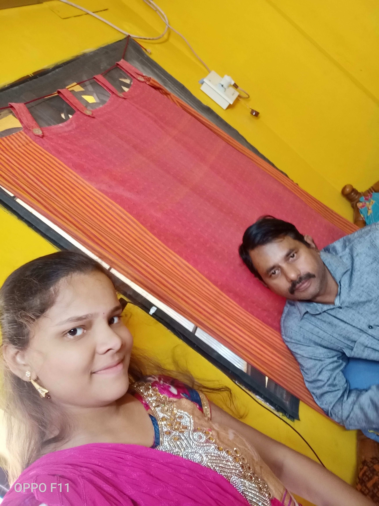

Mahesh Babu,also known as Prince of Tollywood is my favourite actor.He is such a wonderful actor.He is not only an actor but also a socially responsible citizen. His movies are really awesome.He recieved 2 filmfare awards for Okkadu and Pokiri.He beat Bollywood superstars like Shah Rukh Khan,Aamir Khan and Salman Khan in the list of Most desirable man in Times of India.
Coming to the hero of my family
Click on the image to know about my sweet dad
